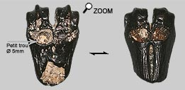
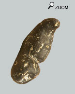
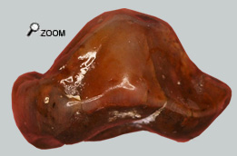

|
Repérer le prédateur …

On peut dépister le passage des gros prédateurs sur les os des proies.
 L’extrémité d’os canon d’un cervidé (taille Procervulus) montre un petit trou d’environ 5 mm de diamètre.
Les blessures de l’os n’ont pas été faites lors du dégagement du fossile puisque des sédiments marins recouvraient le perçage.
Il est peu probable que ce trou ait été fait par un choc de l’os lors du transport par la rivière. Les parties les plus exposées à l’érosion ou bien aux chocs sont les parties saillantes. Or les 2 boules de l’os canon sont intactes.
Par contre le trou dans l’os est entouré de marques d’étreinte sur les 2 faces de l’os. Ceci montre qu’il a été enserré dans une mâchoire. La pointe d’une dent a alors défoncé la partie dure externe de l’os et s’est enfoncée dans la partie spongieuse en profondeur.
Puis le suivre à la trace ...
 La forme de ce fossile n’est pas du tout équivoque. Il s’agit d’un coprolithe.
L’extrémité proximale forme un pédicule crochu comme on peut parfois en voir sur les crottes de chat. L’extrémité distale est aplatie comme matée par une chute sur le sol.
Cette marque de chute plaide pour un animal terrestre.
Or, seuls les excréments de carnivores peuvent être fossilisés à cause de la forte concentration en phosphate des matières fécales.
Donc ce petit coprolithe doit correspondre à un petit carnivore terrestre.

Et puis il y aussi celui-ci!
La forme du coprolithe est moins évidente mais elle contient une molaire d'auréliachoerus bien visible et aussi les restes d'une autre dent visible seulement à la loupe binoculaire. L'émail de la dent a été polie par les sucs gastriques du prédateur.
Les restes des proies dans les coprolithes ne sont pas très courants. Et le débusquer enfin!…

Pourquoi est-il aussi difficile de trouver des restes de prédateurs ?
Tout simplement parce que si un prédateur veut survivre, il doit évoluer dans un bassin écologique contenant des centaines de proies potentielles. Il est donc plus facile de trouver des restes des nombreuses proies que les fossiles des quelques prédateurs…
Cependant de petits fossiles peuvent parfois être trouvés, comme cette dent. Après il est difficile de déterminer l'espèce ou même la famille de son propriétaire, tant les carnivores sont variés...
|